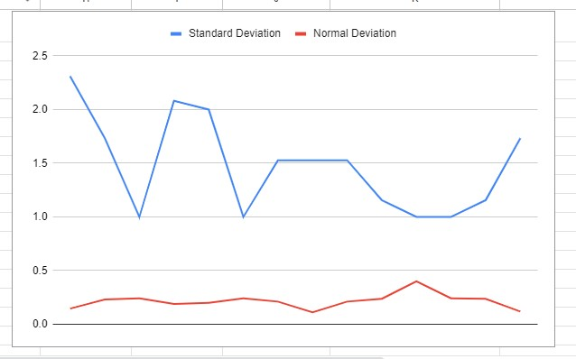
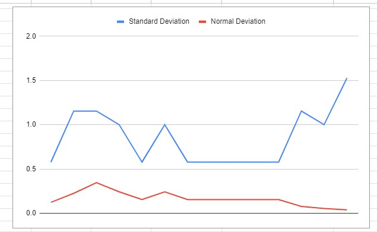

Results
Click here to visit the data in detailTeam A: Results

Team B: Results

Statistical Analysis
1. Descriptive Statistics:
Group A (High Noise Exposure):
- Mean Change in Stress: 1.357
- Median Change in Stress: 1
- Standard Deviation: 0.878
- Mean Change in Stress: -0.643
- Median Change in Stress: -1
- Standard Deviation: 0.806
- In Group A, there is a moderate positive correlation between initial stress levels and changes in stress levels, suggesting that higher initial stress levels are associated with greater increases in stress after high noise exposure.
- In Group B, there is a moderate negative correlation between initial stress levels and changes in stress levels, indicating that higher initial stress levels are associated with greater decreases in stress after low noise exposure.
- Group A (High Noise Exposure): Participants generally experienced an increase in stress levels, with a mean increase of 1.357. The correlation between initial stress levels and changes in stress levels was moderately positive.
- Group B (Low Noise Exposure): Participants generally experienced a decrease in stress levels, with a mean decrease of -0.643. The correlation between initial stress levels and changes in stress levels was moderately negative.
- Overall Conclusion: The results support the hypothesis that exposure to high levels of traffic noise increases stress levels, while exposure to low levels of residential noise decreases stress levels. The linear models provide a reasonable fit for the observed data, indicating a consistent trend across participants.
Group B (Low Noise Exposure):
To determine the correlation between initial stress levels and changes in stress levels, we can calculate the Pearson correlation coefficient for both groups.
Group A (High Noise Exposure):
Pearson correlation coefficient (r): 0.603
Group B (Low Noise Exposure):
Pearson correlation coefficient (r): -0.457
Interpretation:
3. Function of Best Fit:
Given the nature of the data, a linear model is appropriate for analyzing the relationship between initial stress levels and changes in stress levels. The scatter plots for both groups suggest a linear trend.
Group A (High Noise Exposure):
--> Linear Equation: y=0.573x+0.571
Where y, y is the change in stress level, and x, x is the initial stress level.
Group B (Low Noise Exposure):
Linear Equation: y=-0.5x - 0.143
Where y, y is the change in stress level, and x, x is the initial stress level.
Results Summary: